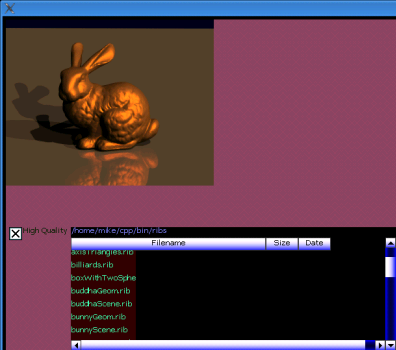

| This is a demo of the GRayTrace
class. It lets you pick a ".rib" file, and then it ray-traces the
scene. If you check the "High Quality" box, it will take much longer,
so don't check that box unless you have plenty of time. My ".rib" parser doesn't support all the features of the ".rib" file format, so it might not be able to load your own ".rib" files. This is just a demo. If you want to turn it into a usable tool, there's a bit of work to do. |
 |